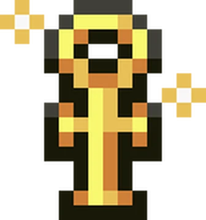
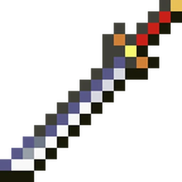
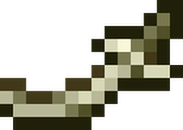
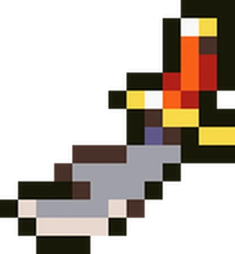
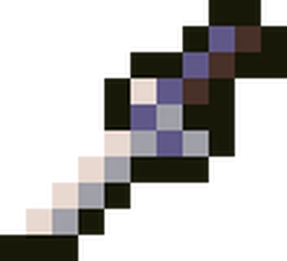
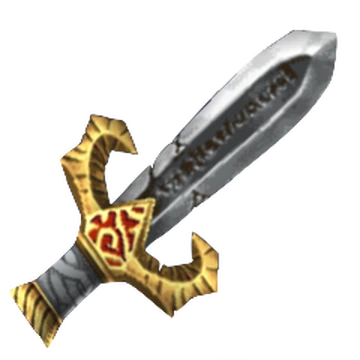
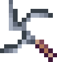
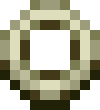
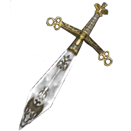

| Ankh of Life Conocida como la "llave de la vida", es una cruz egipcia que simboliza la existencia eterna y la divinidad. En la antigüedad, los faraones y dioses eran representados portándola para demostrar su dominio sobre la vida y la muerte. En el contexto del juego, este origen sagrado le otorga propiedades únicas de protección y purificación contra las fuerzas de la noche, actuando como un recordatorio del poder de la luz sobre la oscuridad.  |
| Osafune Katana Proviene de la escuela de herrería más famosa del antiguo Japón, ubicada en la provincia de Bizen. Fundada por el maestro Mitsutada en el período Kamakura, sus hojas eran admiradas por su temple perfecto y su equilibrio letal. Era el arma predilecta de los guerreros samurái más experimentados, quienes confiaban sus vidas a la calidad inigualable del acero Osafune, considerado un tesoro espiritual en la cultura nipona.  |
| Badelaire Una cimitarra europea de hoja pesada y curvatura pronunciada. Su diseño está pensado para maximizar la inercia en cada tajo, permitiendo cortes profundos incluso contra protecciones ligeras. Es un arma que combina la elegancia de los sables orientales con la robustez necesaria para los combates brutales, siendo ideal para aquellos que prefieren ataques de gran impacto físico y durabilidad mecánica.  |
| Barzai's Scimitar Esta arma tiene un origen literario oscuro vinculado a los mitos de Cthulhu de H.P. Lovecraft. Barzai el Sabio fue un místico que desapareció buscando a los dioses. Su cimitarra, fabricada en bronce con una empuñadura de ébano, está imbuida de energías arcanas que la hacen especialmente efectiva contra criaturas que no pertenecen a nuestro plano físico, destellando con un aura de conocimiento prohibido.  |
| Basilard Una daga medieval muy popular en los siglos XIV y XV, especialmente en las regiones de Suiza y Alemania. Su característica empuñadura en forma de "H" permitía un agarre firme tanto para la defensa como para ataques rápidos de estocada. Era el arma secundaria ideal para caballeros y ciudadanos por igual debido a su tamaño compacto, facilidad de ocultación y su sorprendente efectividad letal en espacios reducidos.  |
| Bastard Sword Llamada así por ser un "híbrido" entre la espada larga tradicional y el pesado mandoble, la espada bastarda (o de mano y media) ofrece una versatilidad de combate única. Su empuñadura alargada permitía al guerrero usarla con una sola mano para ganar agilidad y alcance, o con ambas para descargar golpes de una potencia demoledora, adaptándose con fluidez a cualquier situación defensiva u ofensiva.  |
| Bibuti Estas son las cenizas sagradas utilizadas en los rituales de la India para la purificación espiritual. Se cree que poseen propiedades milagrosas y protectoras, capaces de alejar la mala fortuna y sanar las heridas del alma. En la lucha constante contra las tinieblas, el Bibuti actúa como un elemento purificador místico que daña severamente a los seres espectrales y demonios que no soportan su intensa santidad natural. |
| Bwaka Knife Un exótico cuchillo arrojadizo originario de las antiguas tribus del África central. Estos cuchillos destacan por sus múltiples puntas afiladas y formas geométricas complejas, diseñadas meticulosamente para girar violentamente en el aire y asegurar un impacto traumático desde cualquier ángulo. Es un arma altamente impredecible y letal en manos de un lanzador que domine el arte de la precisión y la rotación.  |
| Chakram Un anillo metálico con bordes externos afilados como cuchillas de afeitar, utilizado históricamente por los guerreros de la India. Se lanzaba con un movimiento circular extremadamente rápido, permitiendo atacar a múltiples enemigos a larga distancia con un efecto de retorno. Su diseño aerodinámico lo convierte en una de las armas arrojadizas más eficaces, elegantes y temidas de la antigüedad clásica.  |
| Claymore La emblemática espada de dos manos utilizada por los valientes guerreros de las tierras altas de Escocia. Con una longitud que a menudo superaba el metro y medio, la Claymore requería una fuerza física inmensa para ser blandida con eficacia. Sin embargo, un solo golpe certero era suficiente para destrozar escudos y armaduras pesadas, simbolizando el poderío, la resistencia y el espíritu indomable del pueblo escocés.  |